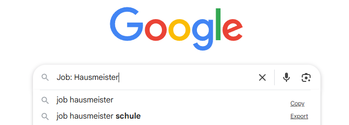
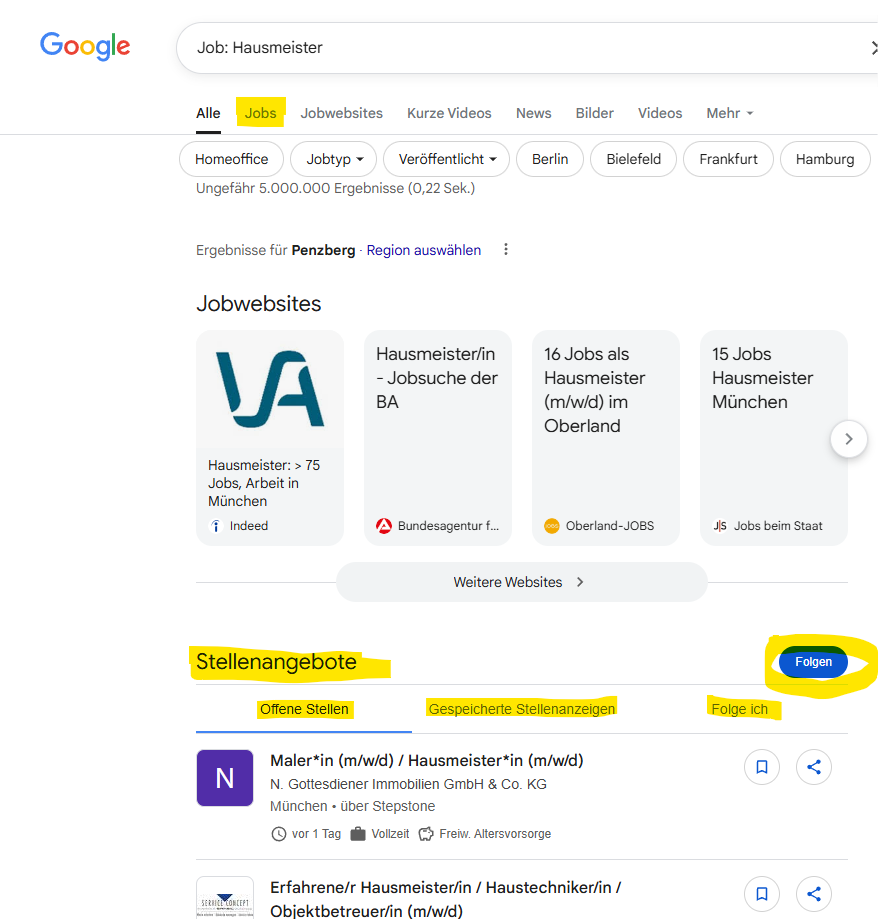

Нажмите, чтобы увеличить · масштабируйте двумя пальцами
Я не нахожу вакансий – первые советы для самопомощи
Google – это не только поисковик, но и сканер вакансий, который охватывает около 72 % всех объявлений о работе в интернете: например, со StepStone, Indeed, XING, сайтов компаний и многих других.
Job: [твоя профессия, образование или диплом]Пример:Job: Bürokauffrau (офисный работник)Job: Marketing BachelorВажно: Запрос должен начинаться со слова «Job». Тогда ты сразу попадёшь в поиск вакансий Google for Jobs.
Важно: Google просматривает все объявления и показывает только те, в которых твой запрос встречается точно так же.

Здесь ты найдёшь обзор всех подходящих актуальных вакансий – в удобном списке.
Там можно фильтровать по городу, работодателю, отрасли или типу занятости.
Нажми синюю кнопку «Отслеживать» («Folgen») прямо в блоке вакансий Google.
Так ты будешь автоматически каждый день получать письма с новыми вакансиями по своему запросу.

С каждым отказом ты теряешь деньги, которые уже мог бы зарабатывать на новой работе!
Сделай первый шаг сегодня. Забронируй свой час – и снова поверь в себя.
Выберите самый удобный для вас способ связи. Буду рада вашему запросу.
Позвонить
+49 160 91880672
Записаться сейчас
Беседа 15 мин · бесплатно
★ Рекомендуемый способ связи+49 160 91880672
kontakt@externe-personalabteilung.de
www.externe-personalabteilung.de · Номер клиента в Agentur für Arbeit (Федеральное агентство по труду): A863B17231
Ваш запрос безопасен и конфиденциален. Никаких обязательств.